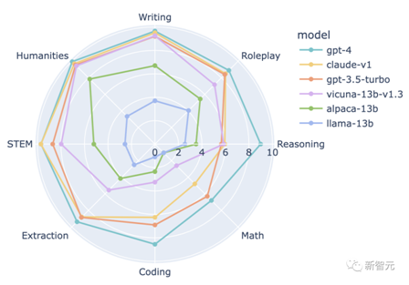
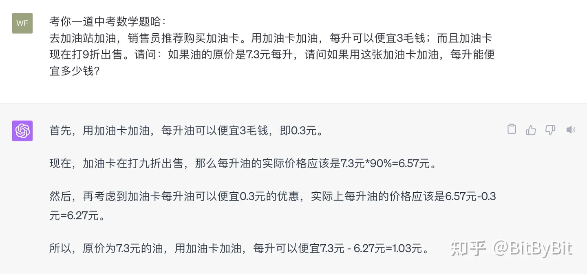
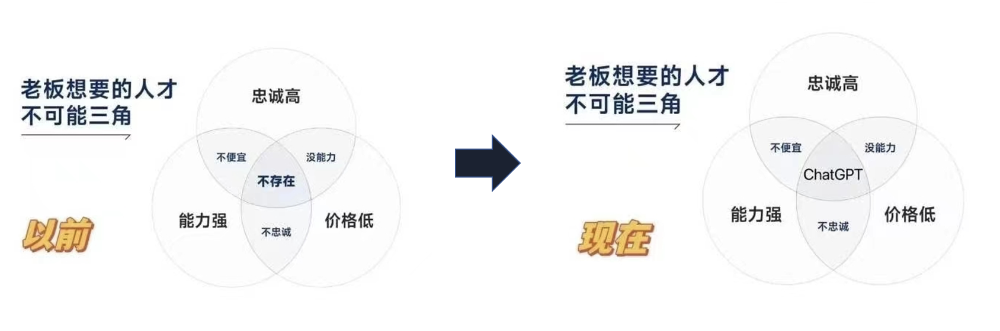
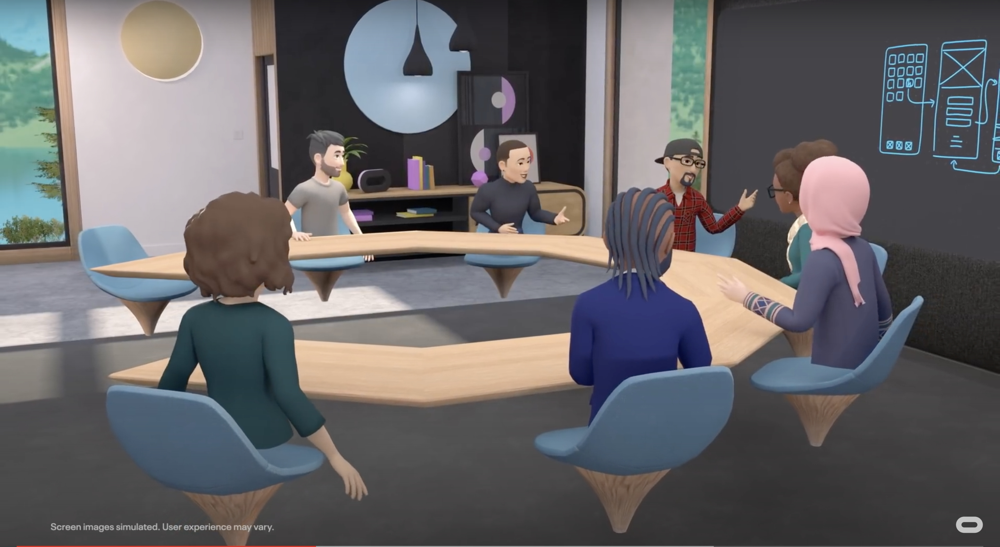

<!DOCTYPE HTML>
<html>
<head><meta name="generator" content="Hexo 3.9.0">
  <meta charset="utf-8">
  <meta http-equiv="X-UA-Compatible" content="IE=edge">
  <meta name="apple-mobile-web-app-capable" content="yes">
  <meta name="apple-mobile-web-app-status-bar-style" content="black">
  <meta name="google-site-verification" content>
  
  <title>GPT四问</title>
  <meta name="author" content="Emac">
   <meta name="description" content="前两周，ZA技术社区举办了一场主题为“未来，程序员职业会消失吗？”的Geek圆桌派，我作为业务研发的代表参加了此次直播。由于直播时间有限，未能充分表达我的观点，故写此篇博客进行详述。另一方面，也想借此篇博客，印证十年后我的这些观点是否还成立。

Q1：你对“程序员会不会被 AI 取代”（或未来程序员">
  

  <meta property="og:title" content="GPT四问">
  <meta name="viewport" content="width=device-width, initial-scale=1, maximum-scale=1">
  <meta property="og:site_name" content="Emac">
 <meta property="og:image" content="undefined">
  
  <link href="/apple-touch-icon-precomposed.png" sizes="180x180" rel="apple-touch-icon-precomposed">
  <link rel="alternate" href="/atom.xml" title="Emac" type="application/atom+xml">
  <link rel="stylesheet" href="//cdn.bootcss.com/bootstrap/3.3.6/css/bootstrap.min.css">
  <link rel="stylesheet" href="//cdn.bootcss.com/font-awesome/4.5.0/css/font-awesome.min.css">
  <link rel="stylesheet" href="/css/m.min.css">
  <link rel="icon" type="image/x-icon" href="/favicon.ico">
</head>
</html>
<body>
  <div id='wx_pic' style='display:none;'></div>
  <div id="main">
    <div class="behind">
      <div class="back">
        <a href="/" class="black-color"><i class="fa fa-times" aria-hidden="true"></i></a>
      </div>
      <div class="description">
        &nbsp;拾贝
      </div>
    </div>
    <div class="container">
      

  <article class="standard post">
    <div class="title">
      
  
    <h1 class="page-title center">
        GPT四问
    </h1>
  


    </div>
    <div class="meta center">
      
<time datetime="2024-01-01T13:00:00.000Z">
  <i class="fa fa-calendar"></i>&nbsp;
  2024-01-01
</time>


    
    &nbsp;
    <i class="fa fa-tag"></i>&nbsp;
    <a href="/categories/arch/">arch</a>


    
    &nbsp;
    <i class="fa fa-tag"></i>&nbsp;
    <a href="/tags/原创/">原创</a>


    </div>
    <hr>
    <div class="picture-container">
      
    </div>
    <blockquote>
<p>前两周，ZA技术社区举办了一场主题为“<a href="https://live.csdn.net/room/wl5875/fL36YEyS" target="_blank" rel="noopener">未来，程序员职业会消失吗？</a>”的Geek圆桌派，我作为业务研发的代表参加了此次直播。由于直播时间有限，未能充分表达我的观点，故写此篇博客进行详述。另一方面，也想借此篇博客，印证十年后我的这些观点是否还成立。</p>
</blockquote>
<h2 id="Q1：你对“程序员会不会被-AI-取代”（或未来程序员这一职业会不会消失），持什么样看法或态度？"><a href="#Q1：你对“程序员会不会被-AI-取代”（或未来程序员这一职业会不会消失），持什么样看法或态度？" class="headerlink" title="Q1：你对“程序员会不会被 AI 取代”（或未来程序员这一职业会不会消失），持什么样看法或态度？"></a>Q1：你对“程序员会不会被 AI 取代”（或未来程序员这一职业会不会消失），持什么样看法或态度？</h2><blockquote>
<p>本文中的 AI 特指这一波以 ChatGPT 为代表的泛人工智能。</p>
</blockquote>
<p>这个问题比较大，我想从三个角度来回答。</p>
<p>首先，要明确目前 AI 的边界或者说局限。在我看来，主要有三点。</p>
<p>1、计算能力差。下图是去年 6 月份 UC 伯克利主导的 MT-Bench 基准测试中各个知名 LLM（Large Language Model，大语言模型） 的得分。可以看到，所有 LLM 在数学这一类别的得分都是全类别中最低的。</p>
<p></p>
<p>又比如去年火爆上海的数学中考 22 题，不管用 ChatGPT 还是 GPT-4，都没法给出正确的答案。</p>
<p></p>
<p>关于这一点，我认为本质上的原因是 GPT 是一个语言模型，而非计算模型。</p>
<p>2、无法生产新知识。ChatGPT 的本质是知识压缩，把海量的人类社会的知识压缩到 96 层神经网络中，从而“涌现”出某种类智能。表面上看，你问 ChatGPT 任何一个问题，ChatGPT 都能有模有样的给出一个符合逻辑的回答，但实际上，ChatGPT 并不真正理解它回答的内容，所以才会有鲁迅和周树人是不是同一个人的热梗。</p>
<p>要生产新知识，GPT 必须拥有进化的能力。而从进化论的角度来看，任何生物要进化必然经历三个过程，交配、变异、淘汰。交配是为了交换基因，变异是产生新的更适应环境的基因，然后淘汰掉那些不适应环境的基因。从这点来看，GPT 显然都不满足。</p>
<p>3、没有产生意识。何为意识？意识如何产生？虽然人类目前仍然无法给出一个准确的回答，但作为一个必要条件，感觉和欲望是意识的基本特征（引自《未来简史》）。显然，GPT 既无感觉也无欲望，因此也就没有意识。</p>
<p>理清目前 AI 的三点局限之后，接着从分工的角度看一下程序员的发展趋势。简单来说，程序员可分为三类，开发、测试和运维。其中，开发可以进一步细分为业务开发、架构开发和算法开发，测试分为功能测试和自动化测试，运维分为传统运维和云平台运维。</p>
<p>先说开发，大部分的开发都是业务开发，业务开发本质上就是将业务需求“翻译”成机器代码，而“翻译”恰恰是 GPT 的强项，加上 code-davinci 项目的加持，如果说将来某一天程序员会被 AI 取代，业务开发首当其冲。架构开发和算法开发，需要较强的抽象能力和计算能力，这两点恰恰对应目前 AI 的前两点局限，所以被 AI 取代的可能性较低。再看测试和运维，目前行业的趋势是自动化测试逐步取代功能测试，云平台运维逐步取代传统运维，AI 的出现一定程度上加速了这一过程，大浪淘沙，最终留下的只能是测试架构和运维架构。这意味着，传统意义上的或者说狭义上的程序员会越来越少。举个例子，OpenAI 官网显示，为 ChatGPT 项目做出贡献的人员只有区区 87 人。</p>
<p>另一方面，广义上的程序员会越来越多。何为程序员？简单来说就是会使用编程语言编写程序的人。我们知道，像 Java、C++ 这些编程语言属于第三代编程语言，SQL 属于第四代编程语言，那么基于自然语言交互的 GPT 是不是可以算是第五代编程语言？使用 GPT 完成特定任务的人是不是可以算是一类新的程序员？</p>
<blockquote>
<p>If you can say it, you can do it.</p>
<p>- Silvio Savarese, Salesforce执行副总裁和首席科学家</p>
</blockquote>
<p>最后，程序员会不会被 AI 取代，还要看人类社会对待 AI 的态度，以及与之配套的 AI 安全法规如何制定。由于不受化学规律限制，AI 的发展速度远超人类，我们必须让这个过程变慢，让整个社会适应这个变化，并且制定出一套道德或者说安全法规，让我们能够安全的使用 AI，否则我们的文明就有被摧毁的风险。</p>
<p></p>
<p><em>就像《普罗米修斯》开头一幕，碳基生命会不会是硅基生命的前传？</em></p>
<p>早在 2023 年 3 月，包括图灵奖得主 Yoshua Bengio、伯克利计算机科学教授 Stuart Russell、特斯拉 CEO 埃隆·马斯克、苹果联合创始人 Steve Wozniak 等在内的数千名对人工智能领域关注的学者、企业家、教授发起了一封公开信，强烈呼吁：暂停训练比 GPT-4 更强大的系统，期限为六个月，理由是这些模型对社会和人类存在潜在风险。</p>
<p>美国有个名叫对齐研究中心（Alignment Research Center）的非营利研究机构，致力将人工智能的行为对齐人类的价值观和预期利益。OpenAI 在发布 GPT-4 之前，就曾请求对齐研究中心评估该模型对权力追求行为的能力和潜在风险。</p>
<h2 id="Q2：所以这不得不提到一个现实，AI-是否会倒逼人类社会的工种变化，或者说让人学习新的职业技能，以适应-AI-社会的到来？"><a href="#Q2：所以这不得不提到一个现实，AI-是否会倒逼人类社会的工种变化，或者说让人学习新的职业技能，以适应-AI-社会的到来？" class="headerlink" title="Q2：所以这不得不提到一个现实，AI 是否会倒逼人类社会的工种变化，或者说让人学习新的职业技能，以适应 AI 社会的到来？"></a>Q2：所以这不得不提到一个现实，AI 是否会倒逼人类社会的工种变化，或者说让人学习新的职业技能，以适应 AI 社会的到来？</h2><p>先来看一则新闻，</p>
<blockquote>
<p>2023 年 5 月 2 日，代表 11,500 名编剧的美国编剧工会 WGA 因与影视制片人联盟持续存在的劳资纠纷而宣布罢工，AI 特别是 AIGC 已经成为了此次冲突的核心。自 2023 年初以来越来越受到关注的 ChatGPT，已经影响到好莱坞乃至整个影视行业。漫威最新播出的影视剧《秘密入侵》，就已经将 AI 运用于制作过程，生成了开场字幕，并饱受争议。编剧工会在谈判过程中要求不允许 AI 获得署名，并且不能要求编剧根据 AI 写好的内容进行修改，因为这样也会显著减少工作时长。与此同时，在未经允许的情况下，制作方不可以将工会成员的剧本进行 AI 训练。</p>
</blockquote>
<p>无论你承认或者不承认，AI 已经对当今社会的很多行业产生了不小的冲击。所谓大语言模型，本质上就是知识。一个好的程序员是一个好的模型，一个好的教师是一个好的模型。当 AI 发展到一定阶段，所有的知识工作者都有被取代的可能。美国普林斯顿大学教授爱德华·费尔滕（Edward Felten）甚至还提出了一个“职业AI暴露指数”（AIOE），像客服、秘书、翻译、助教这些职业都属于高 AI 暴露率职业，程序员只能算中等 AI 暴露率职业。试想，哪个老板会抗拒能力强、又忠诚、价格还便宜的 AI 员工？</p>
<p></p>
<p>虽然 AI 或早或晚、或多或少会取代或者部分取代一些职业，但同时也会创造一些新的职业，比如标注师、提示工程师、AI 研究员这类 AI 周边职业。另一方面，那些 AI 边界之外的职业我相信也会出现一个爆发式增长，特别是心理师这个职业。为什么这么说？自 18 世纪六十年代第一次工业革命以来，工作已经成为人的本能。而一旦进入 AI 时代，如《未来简史》所言，绝大部分人将沦为“无价值的群体”，大部分人将不再需要工作。在这个过程中，大量人会出现心理问题，人们被迫寻找工作之外的意义，尝试在社区、家庭、艺术、运动、精神领域和自我探索中找到目的，从追求财富自由转向追求精神自由。</p>
<blockquote>
<p>在成为自己这件事情上，没有人比得过你。</p>
<p>- 纳瓦尔</p>
</blockquote>
<h2 id="Q3：未来，程序员的核心竞争力会体现在哪些方面？需要具备哪些-AI-的知识？培养哪些方面的技能？"><a href="#Q3：未来，程序员的核心竞争力会体现在哪些方面？需要具备哪些-AI-的知识？培养哪些方面的技能？" class="headerlink" title="Q3：未来，程序员的核心竞争力会体现在哪些方面？需要具备哪些 AI 的知识？培养哪些方面的技能？"></a>Q3：未来，程序员的核心竞争力会体现在哪些方面？需要具备哪些 AI 的知识？培养哪些方面的技能？</h2><blockquote>
<p>取代你的不是AI，而是使用AI的人。</p>
</blockquote>
<p>可以用 ASK （Attitude态度，Skill技能，Knowledge知识）模型来回答这个问题。</p>
<p>在态度层面，不管是作为程序员，还是普通人，我们都应该接受 AI，让 AI 成为个人工作、生活的得力助手，千万不要像好莱坞编剧那样视 AI 为敌，拒之千里之外。</p>
<p>在技能层面，作为普通人，要学会使用 AI，着重提升自身的任务分解能力、信息整合能力，特别是学习能力。作为程序员，则要具备一定程度的 AI 开发能力，比如开发 GPT 插件、基于 LangChain + Embedding 的 AI 应用、基于 Llama 的自定义模型等。</p>
<p>在知识层面，通识教育会变得越来越重要，知识的广度比深度更重要，对于程序员而言，了解机器学习、神经网络、强化学习、Transformer等这些 AI 的基本概念和原理是最低的要求。</p>
<h2 id="Q4：我们今天做一个大胆的预测，猜猜-10-年后的程序员工作是怎么样的？（如果程序员这一职业还在的话）"><a href="#Q4：我们今天做一个大胆的预测，猜猜-10-年后的程序员工作是怎么样的？（如果程序员这一职业还在的话）" class="headerlink" title="Q4：我们今天做一个大胆的预测，猜猜 10 年后的程序员工作是怎么样的？（如果程序员这一职业还在的话）"></a>Q4：我们今天做一个大胆的预测，猜猜 10 年后的程序员工作是怎么样的？（如果程序员这一职业还在的话）</h2><p>虽然我不知道 AI 何时会产生真正的智能，但有一点我敢肯定，AI 一定会越来越小，越来越快。</p>
<p>关于计算机性能有个摩尔定律，当价格不变时，集成电路上可容纳的晶体管数目，约每隔 18 个月便会增加一倍，性能也将提升一倍。1946 年，第一代电子管计算机占地 150 平方米，重 30 吨，每秒 5000 次运算。到了2023年，最新款的苹果手机 15 Pro，6.1 英寸的屏幕，重 187 克，主频达到 3.78 GHz。两者相比，后者重量降低了 6 个数量级，速度却提升了 6 个数量级。</p>
<p>类似的事情大概率也会发生在 AI 身上。为了产生类比人类的“智能“，ChatGPT  每次训练要消耗 90 多万度电，相当于 1200 个中国人一年的生活用电量。而人类大脑的运行功率只有区区 20 瓦。单就能耗这一点，就有巨大的提升空间。</p>
<p>就 10 年而言，我相信程序员这一职业不会产生本质上的变化，但程序员的电脑上一定会出现各式各样的 Copilot，有协助开发的，有协助测试的，甚至有协助开会的。再往后看，当 AI 遇上元宇宙、脑机接口，程序员可能就彻底成为一个数字化职业。</p>
<p></p>
<h2 id="后记"><a href="#后记" class="headerlink" title="后记"></a>后记</h2><p>面对飞速发展的 AI ，人类将何去何从？是像对待克隆人技术一样明令禁止，还是像对待核武器一样通过《不扩散核武器条约》进行限制，抑或是像《三体》中的降临派一样全面迎接 AI 时代的到来？且看十年之后。</p>


  </article>
  </script>


    </div>
  </div>
  <footer class="page-footer"><div class="clearfix">
</div>
<div class="right-foot container">
    <div class="firstrow">
        <a href="#top" >
        <i class="fa fa-arrow-right"></i>
        </a>
        © emacoo.cn 2015-2024
    </div>
    <div class="secondrow">
        <a href="https://github.com/gaoryrt/hexo-theme-pln">
        
        </a>
    </div>
</div>
<div class="clearfix">
</div>
<script async src="//busuanzi.ibruce.info/busuanzi/2.3/busuanzi.pure.mini.js"></script>
<div class="busuanzi center">
    <span id="busuanzi_container_site_pv">本站总访问量<span id="busuanzi_value_site_pv"></span>次</span>
    <span id="busuanzi_container_site_uv">本站访客数<span id="busuanzi_value_site_uv"></span>人次</span>
    <span id="busuanzi_container_page_pv">
      本文总阅读量<span id="busuanzi_value_page_pv"></span>次
    </span>
</div>
</footer>
  <script src="//cdn.bootcss.com/jquery/2.2.1/jquery.min.js"></script>
<script src="/js/search.js"></script>
<script type="text/javascript">

// comments below to disable loading animation
function revealOnScroll() {
  var scrolled = $(window).scrollTop();
  $(".excerpt, .index-title, .index-meta, p").each(function() {
    var current = $(this),
      height = $(window).outerHeight(),
      offsetTop = current.offset().top;
    (scrolled + height + 50 > offsetTop) ? current.addClass("animation"):'';
  });
}
$(window).on("scroll", revealOnScroll);
$(document).ready(revealOnScroll)

// disqus scripts


// dropdown scripts
$(".dropdown").click(function(event) {
  var current = $(this);
  event.stopPropagation();
  $(current).children(".dropdown-content")[($(current).children(".dropdown-content").hasClass("open"))?'removeClass':'addClass']("open")
});
$(document).click(function(){
    $(".dropdown-content").removeClass("open");
})

// back to top scripts
$("a[href='#top']").click(function() {
  $("html, body").animate({ scrollTop: 0 }, 500);
  return false;
});


var path = "/search.xml";
searchFunc(path, 'local-search-input', 'local-search-result');

</script>

</body>
</html>
